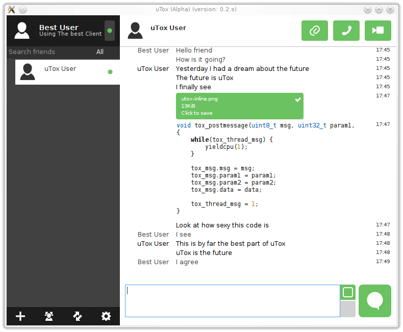

uTx
The Future of Instant Messaging
Tox is a Free Software project whose goal is to free users from the grip of
Proprietary instant messengers like Skype
Register your Tox ID on utox.org (enables others to add you with username@utox.org)
Donate BTC: 1EGDneqBdcjQ9XHi8wkDnwgiH8Ccfg7LrM 